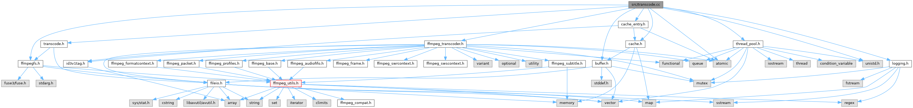

|
FFmpegfs Fuse Multi Media Filesystem 2.19
|
File transcoder interface implementation. More...
#include "transcode.h"#include "ffmpegfs.h"#include "ffmpeg_transcoder.h"#include "buffer.h"#include "cache.h"#include "logging.h"#include "cache_entry.h"#include "thread_pool.h"#include <unistd.h>#include <atomic>
Go to the source code of this file.
Classes | |
| struct | THREAD_DATA |
| THREAD_DATA struct to pass data from parent to child thread. More... | |
Typedefs | |
| typedef struct THREAD_DATA | THREAD_DATA |
| THREAD_DATA struct to pass data from parent to child thread. | |
Functions | |
| static bool | transcode (std::shared_ptr< THREAD_DATA > thread_data, Cache_Entry *cache_entry, FFmpeg_Transcoder &transcoder, bool *timeout) |
| Actually transcode file. | |
| static int | transcoder_thread (std::shared_ptr< THREAD_DATA > thread_data) |
| Transcoding thread. | |
| static bool | transcode_until (Cache_Entry *cache_entry, size_t offset, size_t len, uint32_t segment_no) |
| Transcode the buffer until the buffer has enough or until an error occurs. The buffer needs at least 'end' bytes before transcoding stops. Returns true if no errors and false otherwise. | |
| static int | transcode_finish (Cache_Entry *cache_entry, FFmpeg_Transcoder &transcoder) |
| Close the input file and free everything but the initial buffer. | |
| void | transcoder_cache_path (std::string *path) |
| Get transcoder cache path. | |
| bool | transcoder_init () |
| Initialise transcoder, create cache. | |
| void | transcoder_free () |
| Free transcoder. | |
| bool | transcoder_cached_filesize (LPVIRTUALFILE virtualfile, struct stat *stbuf) |
| Simply get encoded file size (do not create the whole encoder/decoder objects) | |
| bool | transcoder_set_filesize (LPVIRTUALFILE virtualfile, int64_t duration, BITRATE audio_bit_rate, int channels, int sample_rate, AVSampleFormat sample_format, BITRATE video_bit_rate, int width, int height, bool interleaved, const AVRational &framerate) |
| Set the file size. | |
| bool | transcoder_predict_filesize (LPVIRTUALFILE virtualfile, Cache_Entry *cache_entry) |
| Predict file size. | |
| Cache_Entry * | transcoder_new (LPVIRTUALFILE virtualfile, bool begin_transcode) |
| Allocate and initialise the transcoder. | |
| bool | transcoder_read (Cache_Entry *cache_entry, char *buff, size_t offset, size_t len, int *bytes_read, uint32_t segment_no) |
| Read some bytes from the internal buffer and into the given buffer. | |
| bool | transcoder_read_frame (Cache_Entry *cache_entry, char *buff, size_t offset, size_t len, uint32_t frame_no, int *bytes_read, LPVIRTUALFILE virtualfile) |
| Read one image frame from the internal buffer and into the given buffer. | |
| void | transcoder_delete (Cache_Entry *cache_entry) |
| Free the cache entry structure. | |
| size_t | transcoder_get_size (Cache_Entry *cache_entry) |
| Return size of output file, as computed by encoder. | |
| size_t | transcoder_buffer_watermark (Cache_Entry *cache_entry, uint32_t segment_no) |
| Return the current watermark of the file while transcoding. | |
| size_t | transcoder_buffer_tell (Cache_Entry *cache_entry, uint32_t segment_no) |
| Return the current file position in the file. | |
| void | transcoder_exit () |
| Exit transcoding. | |
| bool | transcoder_cache_maintenance () |
| Run cache maintenance. | |
| bool | transcoder_cache_clear () |
| Clear transcoder cache. | |
Variables | |
| const int | GRANULARITY = 250 |
| Image frame conversion: ms between checks if a picture frame is available. | |
| const int | FRAME_TIMEOUT = 60 |
| Image frame conversion: timout seconds to wait if a picture frame is available. | |
| const int | TOTAL_RETRIES = FRAME_TIMEOUT*1000/GRANULARITY |
| Number of retries. | |
| static std::unique_ptr< Cache > | cache |
| Global cache manager object. | |
| static std::atomic_bool | thread_exit |
| Used for shutdown: if true, forcibly exit all threads. | |
File transcoder interface implementation.
Definition in file transcode.cc.
|
static |
Actually transcode file.
| [in,out] | thread_data | - Thread data with lock objects |
| [in,out] | cache_entry | - Underlying thread entry |
| [in] | transcoder | - Transcoder object for transcoding |
| [out] | timeout | - True if transcoding timed out, false if not |
Definition at line 775 of file transcode.cc.
References cache, Cache_Entry::clear(), FFmpeg_Transcoder::closeio(), FFMPEGFS_PARAMS::current_format(), Logging::debug(), DEC_EOF, DEC_ERROR, DEC_SUCCESS, Cache_Entry::decode_timeout(), FFmpegfs_Format::desttype(), FFmpeg_Transcoder::duration(), Cache_Entry::filename(), format_size(), format_time(), GRANULARITY, FFmpeg_Transcoder::id3v1tag(), Logging::info(), Cache_Entry::is_finished(), FFmpeg_Transcoder::is_frameset(), FFmpeg_Transcoder::is_hls(), CACHE_INFO::m_averror, Cache_Entry::m_buffer, Cache_Entry::m_cache_info, CACHE_INFO::m_duration, CACHE_INFO::m_errno, CACHE_INFO::m_error, Cache_Entry::m_id3v1, Cache_Entry::m_is_decoding, FFMPEGFS_PARAMS::m_max_inactive_suspend, FFMPEGFS_PARAMS::m_prebuffer_size, FFMPEGFS_PARAMS::m_prebuffer_time, CACHE_INFO::m_predicted_filesize, Cache_Entry::m_seek_to_no, CACHE_INFO::m_segment_count, Cache_Entry::m_suspend_timeout, CACHE_INFO::m_video_frame_count, mssleep(), FFmpeg_Transcoder::open_input_file(), FFmpeg_Transcoder::open_output_file(), Cache_Entry::openio(), params, FFmpeg_Transcoder::predicted_filesize(), FFmpeg_Transcoder::process_single_fr(), FFmpeg_Transcoder::pts(), Cache_Entry::ref_count(), FFmpeg_Transcoder::segment_count(), FFmpeg_Transcoder::stack_seek_frame(), FFmpeg_Transcoder::stack_seek_segment(), Cache_Entry::suspend_timeout(), thread_exit, transcode_finish(), Cache_Entry::update_access(), FFmpeg_Transcoder::video_frame_count(), Cache_Entry::virtname(), and Cache_Entry::virtualfile().
Referenced by transcoder_thread().
|
static |
Close the input file and free everything but the initial buffer.
| [in] | cache_entry | - corresponding cache entry |
| [in] | transcoder | - Current FFmpeg_Transcoder object. |
Definition at line 156 of file transcode.cc.
References Logging::debug(), FFmpeg_Transcoder::duration(), FFmpeg_Transcoder::encode_finish(), FINISHED_INCOMPLETE, FINISHED_SUCCESS, Cache_Entry::flush(), format_result_size_ex(), format_size_ex(), FFmpeg_Transcoder::have_seeked(), FFmpeg_Transcoder::is_multiformat(), CACHE_INFO::m_averror, Cache_Entry::m_buffer, Cache_Entry::m_cache_info, CACHE_INFO::m_duration, CACHE_INFO::m_encoded_filesize, CACHE_INFO::m_errno, Cache_Entry::m_is_decoding, CACHE_INFO::m_predicted_filesize, CACHE_INFO::m_result, CACHE_INFO::m_segment_count, CACHE_INFO::m_video_frame_count, FFmpeg_Transcoder::segment_count(), FFmpeg_Transcoder::video_frame_count(), and FFmpeg_Transcoder::virtname().
Referenced by transcode().
|
static |
Transcode the buffer until the buffer has enough or until an error occurs. The buffer needs at least 'end' bytes before transcoding stops. Returns true if no errors and false otherwise.
| [in] | cache_entry | - corresponding cache entry |
| [in] | offset | - byte offset to start reading at |
| [in] | len | - length of data chunk to be read. |
| [in] | segment_no | - HLS segment file number. |
Definition at line 81 of file transcode.cc.
References Logging::info(), Cache_Entry::is_finished(), Cache_Entry::m_buffer, Cache_Entry::m_cache_info, CACHE_INFO::m_error, Cache_Entry::m_is_decoding, mssleep(), thread_exit, Logging::trace(), Cache_Entry::virtname(), and Logging::warning().
Referenced by transcoder_read().
| size_t transcoder_buffer_tell | ( | Cache_Entry * | cache_entry, |
| uint32_t | segment_no | ||
| ) |
Return the current file position in the file.
| [in] | cache_entry | - corresponding cache entry |
| [in] | segment_no | - HLS segment file number. |
Definition at line 733 of file transcode.cc.
References Cache_Entry::m_buffer.
| size_t transcoder_buffer_watermark | ( | Cache_Entry * | cache_entry, |
| uint32_t | segment_no | ||
| ) |
Return the current watermark of the file while transcoding.
While transcoding, this value reflects the current size of the transcoded file. This is the maximum byte offset until the file can be read so far.
| [in] | cache_entry | - corresponding cache entry |
| [in] | segment_no | - HLS segment file number. |
Definition at line 728 of file transcode.cc.
References Cache_Entry::m_buffer.
| bool transcoder_cache_clear | ( | ) |
Clear transcoder cache.
Definition at line 755 of file transcode.cc.
References cache.
Referenced by main().
| bool transcoder_cache_maintenance | ( | ) |
Run cache maintenance.
Definition at line 743 of file transcode.cc.
References cache.
Referenced by main(), and maintenance_handler().
| void transcoder_cache_path | ( | std::string * | path | ) |
Get transcoder cache path.
| [out] | path | - Path to transcoder cache. |
Definition at line 195 of file transcode.cc.
References append_sep(), expand_path(), FFMPEGFS_PARAMS::m_cachepath, and params.
Referenced by Cache::load_index(), Buffer::make_cachefile_name(), print_params(), and Logging::Logger::~Logger().
| bool transcoder_cached_filesize | ( | LPVIRTUALFILE | virtualfile, |
| struct stat * | stbuf | ||
| ) |
Simply get encoded file size (do not create the whole encoder/decoder objects)
| [in] | virtualfile | - virtual file object to open |
| [out] | stbuf | - stat struct filled in with the size of the cached file |
Definition at line 261 of file transcode.cc.
References cache, Cache_Entry::m_cache_info, CACHE_INFO::m_encoded_filesize, CACHE_INFO::m_predicted_filesize, Cache_Entry::openio(), and stat_set_size().
Referenced by create_bluray_virtualfile(), create_cuesheet_virtualfile(), create_dvd_virtualfile(), and ffmpegfs_getattr().
| void transcoder_delete | ( | Cache_Entry * | cache_entry | ) |
Free the cache entry structure.
Call this to free the cache entry structure.
The structure is reference counted, after calling this function, if the cache entry is not use by another thread, the cache entry may no longer be valid.
| [in] | cache_entry | - corresponding cache entry |
Definition at line 718 of file transcode.cc.
References cache.
Referenced by ffmpegfs_getattr(), ffmpegfs_release(), get_source_properties(), and kick_next().
| void transcoder_exit | ( | ) |
Exit transcoding.
Send signal to exit transcoding (ending all transcoder threads).
Definition at line 738 of file transcode.cc.
References thread_exit.
Referenced by ffmpegfs_destroy(), and sighandler().
| void transcoder_free | ( | ) |
Free transcoder.
Definition at line 251 of file transcode.cc.
References cache, and Logging::debug().
Referenced by ffmpegfs_destroy().
| size_t transcoder_get_size | ( | Cache_Entry * | cache_entry | ) |
Return size of output file, as computed by encoder.
Returns the file size, either the predicted size (which may be inaccurate) or the real size (which is only available once the file was completely recoded).
| [in] | cache_entry | - corresponding cache entry |
Definition at line 723 of file transcode.cc.
References Cache_Entry::size().
Referenced by ffmpegfs_getattr().
| bool transcoder_init | ( | ) |
Initialise transcoder, create cache.
Definition at line 229 of file transcode.cc.
References cache, Logging::debug(), and Logging::error().
Referenced by main().
| Cache_Entry * transcoder_new | ( | LPVIRTUALFILE | virtualfile, |
| bool | begin_transcode | ||
| ) |
Allocate and initialise the transcoder.
Opens a file and starts the decoding thread if begin_transcode is true. File will be scanned to detect bit rate, duration etc. only if begin_transcode is false.
| [in] | virtualfile | - virtual file object to open |
| [in] | begin_transcode | - if true, transcoding starts, if false file will be scanned only |
Definition at line 353 of file transcode.cc.
References cache, CACHE_CLOSE_DELETE, Cache_Entry::clear(), Logging::debug(), Cache_Entry::filename(), Cache_Entry::is_finished_success(), Cache_Entry::lock(), Cache_Entry::m_cache_info, FFMPEGFS_PARAMS::m_disable_cache, CACHE_INFO::m_duration, VIRTUALFILE::m_duration, CACHE_INFO::m_errno, CACHE_INFO::m_error, Cache_Entry::m_is_decoding, CACHE_INFO::m_predicted_filesize, VIRTUALFILE::m_predicted_size, CACHE_INFO::m_video_frame_count, VIRTUALFILE::m_video_frame_count, Cache_Entry::openio(), Cache_Entry::outdated(), params, tp, Logging::trace(), transcoder_predict_filesize(), transcoder_thread(), Cache_Entry::unlock(), and Cache_Entry::virtname().
Referenced by ffmpegfs_getattr(), ffmpegfs_open(), get_source_properties(), and kick_next().
| bool transcoder_predict_filesize | ( | LPVIRTUALFILE | virtualfile, |
| Cache_Entry * | cache_entry = nullptr |
||
| ) |
Predict file size.
| [in] | virtualfile | - virtual file object to open |
| [in] | cache_entry | - corresponding cache entry |
Definition at line 328 of file transcode.cc.
References FFmpeg_Transcoder::closeio(), FFmpeg_Transcoder::duration(), FFmpeg_Transcoder::filename(), format_size_ex(), Cache_Entry::m_cache_info, CACHE_INFO::m_duration, CACHE_INFO::m_predicted_filesize, CACHE_INFO::m_segment_count, CACHE_INFO::m_video_frame_count, FFmpeg_Transcoder::open_input_file(), FFmpeg_Transcoder::predicted_filesize(), FFmpeg_Transcoder::segment_count(), Logging::trace(), and FFmpeg_Transcoder::video_frame_count().
Referenced by transcoder_new().
| bool transcoder_read | ( | Cache_Entry * | cache_entry, |
| char * | buff, | ||
| size_t | offset, | ||
| size_t | len, | ||
| int * | bytes_read, | ||
| uint32_t | segment_no | ||
| ) |
Read some bytes from the internal buffer and into the given buffer.
| [in] | cache_entry | - corresponding cache entry |
| [out] | buff | - will be filled in with data read |
| [in] | offset | - byte offset to start reading at |
| [in] | len | - length of data chunk to be read. |
| [out] | bytes_read | - Bytes read from transcoder. |
| [in] | segment_no | - HLS segment file number. |
Definition at line 469 of file transcode.cc.
References CACHE_FLAG_RO, check_ignore(), FFMPEGFS_PARAMS::current_format(), FFmpegfs_Format::filetype(), ID3V1_TAG_LENGTH, Cache_Entry::is_finished_success(), Cache_Entry::m_buffer, Cache_Entry::m_cache_info, CACHE_INFO::m_errno, CACHE_INFO::m_error, Cache_Entry::m_id3v1, Cache_Entry::m_seek_to_no, FFMPEGFS_PARAMS::m_win_smb_fix, params, Cache_Entry::read_count(), Cache_Entry::size(), Logging::trace(), transcode_until(), Cache_Entry::update_access(), Cache_Entry::update_read_count(), Cache_Entry::virtname(), Cache_Entry::virtualfile(), and Logging::warning().
Referenced by ffmpegfs_read().
| bool transcoder_read_frame | ( | Cache_Entry * | cache_entry, |
| char * | buff, | ||
| size_t | offset, | ||
| size_t | len, | ||
| uint32_t | frame_no, | ||
| int * | bytes_read, | ||
| LPVIRTUALFILE | virtualfile | ||
| ) |
Read one image frame from the internal buffer and into the given buffer.
| [in] | cache_entry | - corresponding cache entry |
| [out] | buff | - will be filled in with data read |
| [in] | offset | - byte offset to start reading at |
| [in] | len | - length of data chunk to be read. |
| [in] | frame_no | - Number of frame to return. |
| [out] | bytes_read | - Bytes read from transcoder. |
| [in,out] | virtualfile | - Birtual file object of image, may be modified. |
Definition at line 603 of file transcode.cc.
References CACHE_FLAG_RO, Logging::error(), GRANULARITY, Cache_Entry::m_buffer, Cache_Entry::m_cache_info, CACHE_INFO::m_error, Cache_Entry::m_is_decoding, Cache_Entry::m_seek_to_no, VIRTUALFILE::m_st, Cache_Entry::m_suspend_timeout, mssleep(), stat_set_size(), thread_exit, TOTAL_RETRIES, Logging::trace(), Cache_Entry::update_access(), Cache_Entry::update_read_count(), Cache_Entry::virtname(), and Logging::warning().
Referenced by ffmpegfs_read().
| bool transcoder_set_filesize | ( | LPVIRTUALFILE | virtualfile, |
| int64_t | duration, | ||
| BITRATE | audio_bit_rate, | ||
| int | channels, | ||
| int | sample_rate, | ||
| AVSampleFormat | sample_format, | ||
| BITRATE | video_bit_rate, | ||
| int | width, | ||
| int | height, | ||
| bool | interleaved, | ||
| const AVRational & | framerate | ||
| ) |
Set the file size.
| [in] | virtualfile | - virtual file object to open. |
| [in] | duration | - duration of the file, in AV_TIME_BASE fractional seconds. |
| [in] | audio_bit_rate | - average bitrate of audio data (in bits per second). |
| [in] | channels | - number of channels (1: mono, 2: stereo, or more). |
| [in] | sample_rate | - number of audio samples per second. |
| [in] | sample_format | - Selected sample format |
| [in] | video_bit_rate | - average bitrate of video data (in bits per second). |
| [in] | width | - video width in pixels. |
| [in] | height | - video height in pixels. |
| [in] | interleaved | - true if video is interleaved, false if not. |
| [in] | framerate | - frame rate per second (e.g. 24, 25, 30...). |
Definition at line 288 of file transcode.cc.
References FFmpegfs_Format::audio_codec(), FFmpeg_Transcoder::audio_size(), cache, FFMPEGFS_PARAMS::current_format(), FFmpegfs_Format::desttype(), Logging::error(), FFmpegfs_Format::filetype(), format_size_ex(), get_codec_name(), get_filetype_text(), Cache_Entry::m_cache_info, CACHE_INFO::m_predicted_filesize, VIRTUALFILE::m_predicted_size, Cache_Entry::openio(), params, FFmpeg_Transcoder::total_overhead(), Logging::trace(), FFmpegfs_Format::video_codec(), FFmpeg_Transcoder::video_size(), Cache_Entry::virtname(), and Logging::warning().
Referenced by create_bluray_virtualfile(), create_cuesheet_virtualfile(), and create_dvd_virtualfile().
|
static |
Transcoding thread.
| [in] | thread_data | - Corresponding thread data object. |
Definition at line 999 of file transcode.cc.
References cache, CACHE_CLOSE_DELETE, CACHE_CLOSE_NOOPT, Logging::error(), ffmpeg_geterror(), FFmpeg_Transcoder::have_seeked(), Logging::info(), FFmpeg_Transcoder::last_seek_frame_no(), Cache_Entry::m_active_mutex, CACHE_INFO::m_averror, Cache_Entry::m_cache_info, CACHE_INFO::m_errno, CACHE_INFO::m_error, Cache_Entry::m_is_decoding, FFMPEGFS_PARAMS::m_max_inactive_abort, Cache_Entry::m_restart_mutex, Cache_Entry::m_seek_to_no, params, thread_exit, transcode(), Cache_Entry::virtname(), FFmpeg_Transcoder::virtname(), and Logging::warning().
Referenced by transcoder_new().
|
static |
Global cache manager object.
Definition at line 63 of file transcode.cc.
Referenced by transcode(), transcoder_cache_clear(), transcoder_cache_maintenance(), transcoder_cached_filesize(), transcoder_delete(), transcoder_free(), transcoder_init(), transcoder_new(), transcoder_set_filesize(), and transcoder_thread().
| const int FRAME_TIMEOUT = 60 |
Image frame conversion: timout seconds to wait if a picture frame is available.
Definition at line 49 of file transcode.cc.
| const int GRANULARITY = 250 |
Image frame conversion: ms between checks if a picture frame is available.
Definition at line 48 of file transcode.cc.
Referenced by transcode(), and transcoder_read_frame().
|
static |
Used for shutdown: if true, forcibly exit all threads.
Definition at line 64 of file transcode.cc.
Referenced by transcode(), transcode_until(), transcoder_exit(), transcoder_read_frame(), and transcoder_thread().
| const int TOTAL_RETRIES = FRAME_TIMEOUT*1000/GRANULARITY |
Number of retries.
Definition at line 50 of file transcode.cc.
Referenced by transcoder_read_frame().